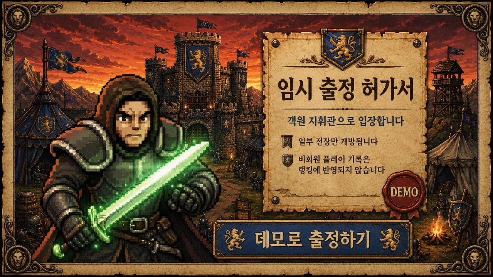

Hater
Unity WebGL 게임을 웹 서비스로 제공하기 위해 프론트엔드 화면, API 연동, Docker/Nginx/AWS 배포, GitLab CI/CD 흐름까지 담당한 로그라이크 디펜스 게임 프로젝트입니다.

Overview
Hater는 스테이지마다 병력 배치, 전투, 탐사 이벤트, 사령관 선택을 반복하며 빌드를 완성해가는 WebGL 기반 로그라이크 디펜스 게임입니다. 플레이어가 현재 스테이지에서 사용한 자원이 다음 스테이지 운영에 영향을 주도록 설계해, 단순한 웨이브 클리어보다 장기적인 자원 판단이 중요하게 작동합니다.
저는 게임 클라이언트 자체보다 웹 서비스로 제공되는 흐름에 집중했습니다. React/TypeScript 기반 화면, 게임 진입 동선, 서버 API 연동, WebGL 빌드 배포 환경을 연결해 사용자가 별도 설치 없이 게임에 접근하고 운영자가 버전을 배포할 수 있는 구조를 만들었습니다.
My Role & Scope
- 프론트엔드와 인프라를 담당하며 React, TypeScript, Tailwind CSS 기반 서비스 화면과 게임 플레이 진입 흐름을 구현했습니다.
- Unity WebGL 빌드를 웹에서 안정적으로 접근할 수 있도록 정적 리소스 제공, 라우팅, Nginx 설정, Docker 배포 구성을 정리했습니다.
- Spring Boot API, PostgreSQL, Redis와 연동되는 서비스 흐름을 확인하고 GitLab Runner 기반 CI/CD로 데모, 정식, 2.0.0 업데이트 배포 과정을 운영했습니다.
Architecture Focus
- 웹 프론트엔드는 게임 소개, 플레이 진입, 정보 공개 화면을 담당하고, WebGL 빌드는 Nginx를 통해 정적 리소스로 제공되도록 구성했습니다.
- 백엔드는 Spring Boot와 Java 21 기반 API로 구성하고, PostgreSQL은 영속 데이터, Redis는 빠른 조회와 운영성 보조 영역에 사용했습니다.
- Docker 컨테이너, Nginx 리버스 프록시, AWS 서버, GitLab CI/CD를 연결해 로컬 빌드 결과가 실제 서비스 배포로 이어지는 흐름을 반복 가능하게 만들었습니다.
Problem & Solution
첫 번째 문제는 Unity WebGL 빌드를 일반 웹 페이지처럼 제공할 때 발생하는 리소스 경로, 압축 파일 제공, 라우팅 충돌이었습니다. 게임 빌드와 React 서비스가 같은 도메인에서 동작해야 했기 때문에 Nginx의 정적 파일 제공 범위와 프론트엔드 라우팅 기준을 분리해 게임 진입 실패 가능성을 줄였습니다.
두 번째 문제는 짧은 기간 안에 데모, 정식 버전, 2.0.0 업데이트를 이어가야 하는 운영 속도였습니다. 수동 배포에 의존하면 수정 범위와 서버 반영 상태가 쉽게 어긋날 수 있어 Docker 이미지, Nginx 설정, GitLab Runner 배포 단계를 정리하고 반복 가능한 릴리즈 흐름으로 관리했습니다.
Technical Highlights
- WebGL 빌드를 웹 서비스 안에 포함해 별도 설치 없이 접근 가능한 플레이 환경을 제공했습니다.
- API 연결, 정보 공개 화면, 통신 암호화 반영, 밸런스 패치까지 이어지는 업데이트 흐름을 배포 관점에서 관리했습니다.
- 게임 내부에서는 빌보드 기법을 활용해 카메라 움직임이 큰 상황에서도 에셋이 정면성을 유지하도록 처리하고 1인칭 시점의 몰입감을 강화했습니다.
Result & Retrospective
2026년 5월 13일 데모 버전, 5월 18일 정식 버전, 5월 20일 2.0.0 업데이트까지 이어지는 릴리즈를 완료했습니다. 단순 구현에서 끝나지 않고 API 연결, 정보 공개, 통신 암호화, 밸런스 패치처럼 서비스 운영 중 발생하는 변경을 실제 배포 흐름 안에서 처리했습니다.
이 프로젝트를 통해 게임 프로젝트에서도 프론트엔드 화면, 빌드 산출물, 서버 설정, 배포 자동화가 하나의 사용자 경험으로 연결된다는 점을 확인했습니다. 특히 WebGL 배포는 빌드 결과물을 올리는 작업이 아니라 리소스 제공 방식과 서비스 라우팅까지 함께 설계해야 안정적이라는 점을 배웠습니다.
주요 화면
